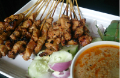
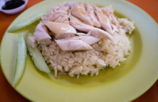
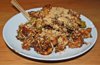
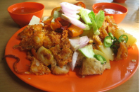
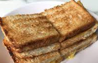
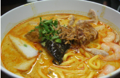
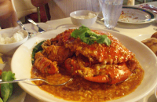

Satay
Satay may consist of diced or sliced chicken, goat, mutton, beef, pork, fish, other meats, or tofu; bamboo skewers are often used, while rustic style of preparations employ skewers from the midrib of the coconut palm frond.
Learn MoreChicken Rice
Hainanese chicken rice is a dish of poached chicken and seasoned rice, served with chilli sauce and usually with cucumber garnishes.
Learn MoreRojak
In Malaysia and Singapore, fruit rojak typically consists of cucumber, pineapple, jícama, bean sprouts, taupok (puffy, deep-fried tofu) and youtiao (cut-up Chinese-style fritters). The dressing is made of water, belacan, sugar, chilli and lime juice.
Learn MoreIndian Rojak
In Malaysia, mamak rojak is associated with Mamak stalls, which are Muslim Malaysian Indian food stalls where rojak mamak is a popular dish.
Learn MoreKaya Toast
A dish consisting of two slices of toast with butter and kaya (coconut jam), commonly served alongside coffee and soft-boiled eggs.
Laksa
Noodles served with an orangey-yellow colour spicy soup stock, flavoured with coconut milk and dried shrimp, topped with ingredients like cockles, prawns and fishcake.
Chilli Crab
Mud crabs are commonly used and are stir-fried in a semi-thick, sweet and savoury tomato-and-chilli-based sauce.